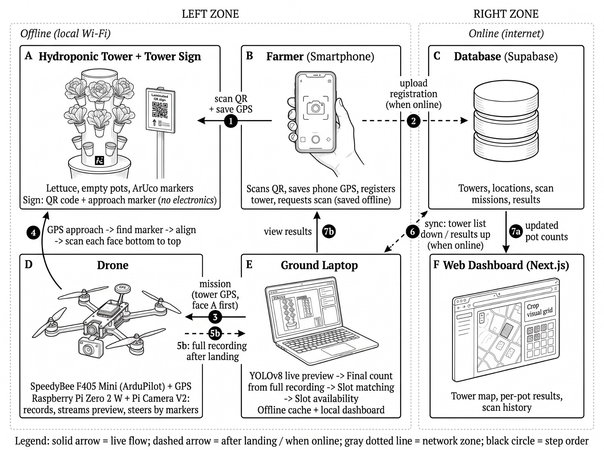

Figure 1 · Conceptual FrameworkAt the tower · local Wi-Fi
- 1Scan QR + save phone GPS
- 3Laptop sends the mission
- 4Approach, align, scan
- 5aLive preview
- 5bFull recording after landing
Records · internet
- 2Upload registration
- 6Sync
- 7Dashboard shows the counts
Live flow
Later / when online